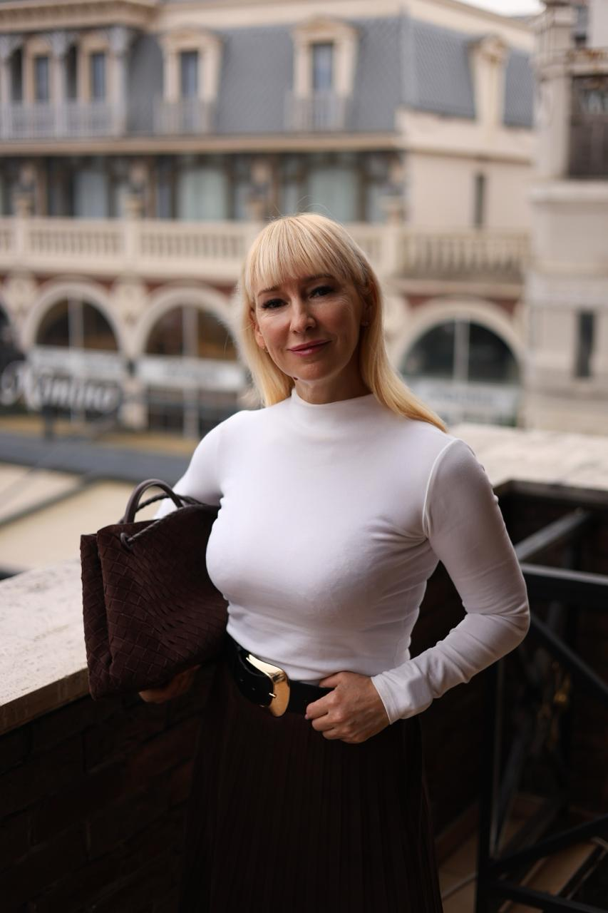
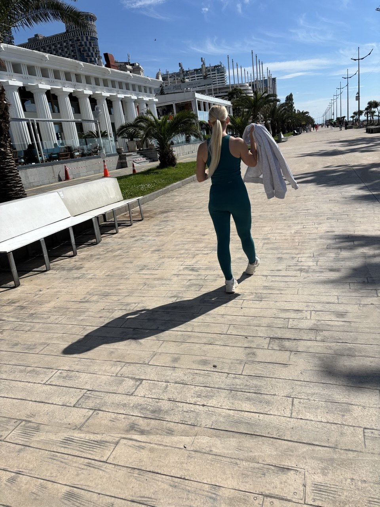
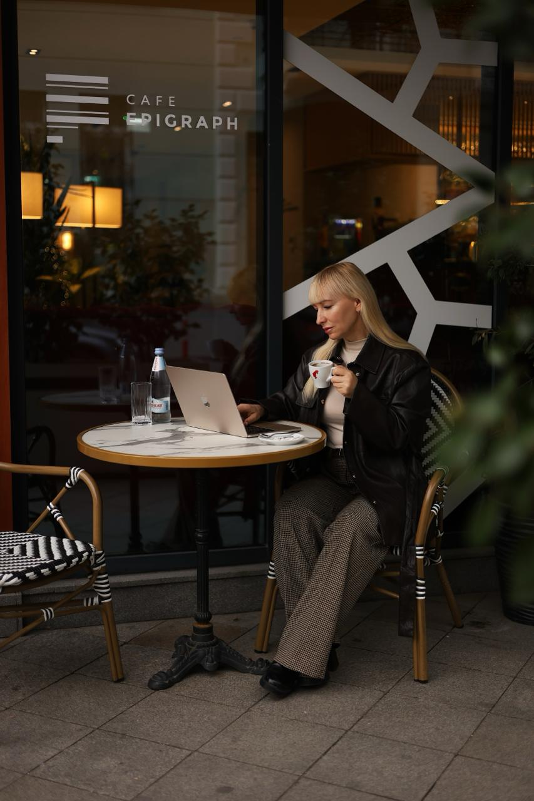
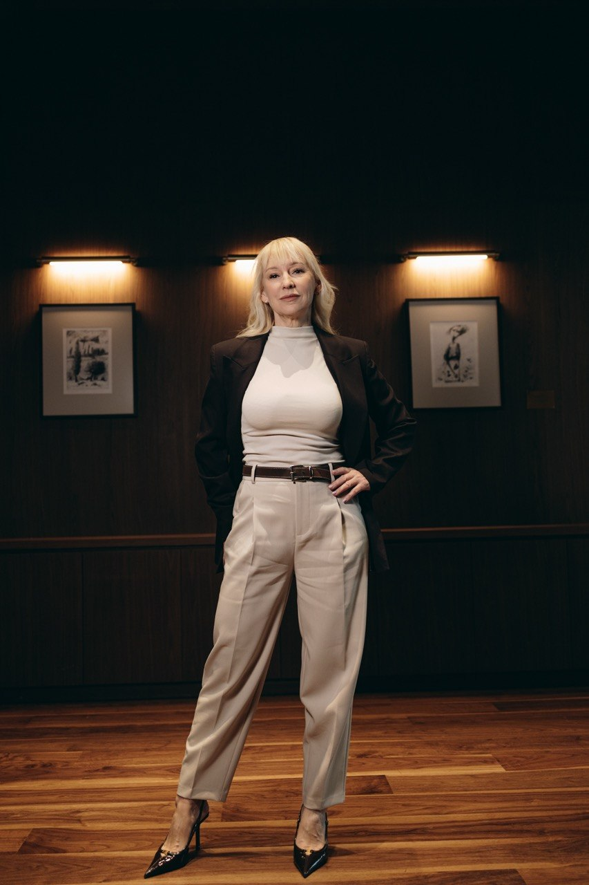
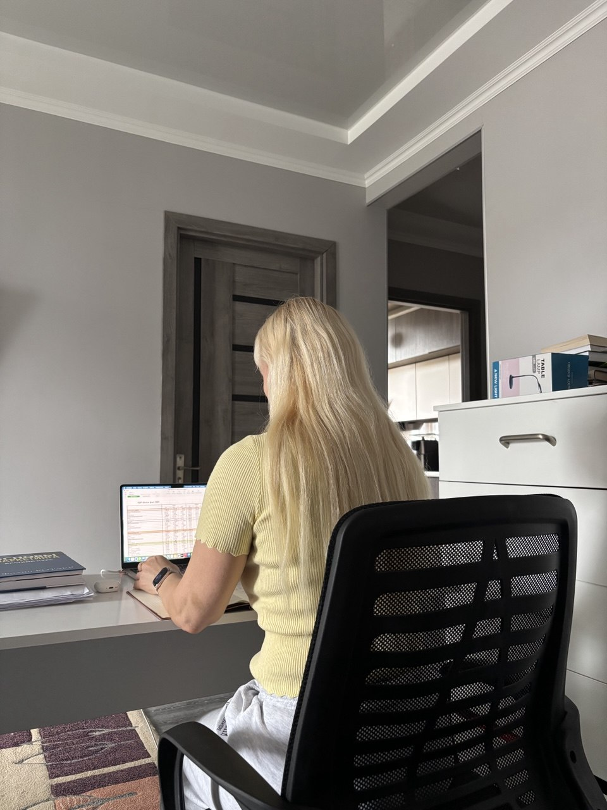
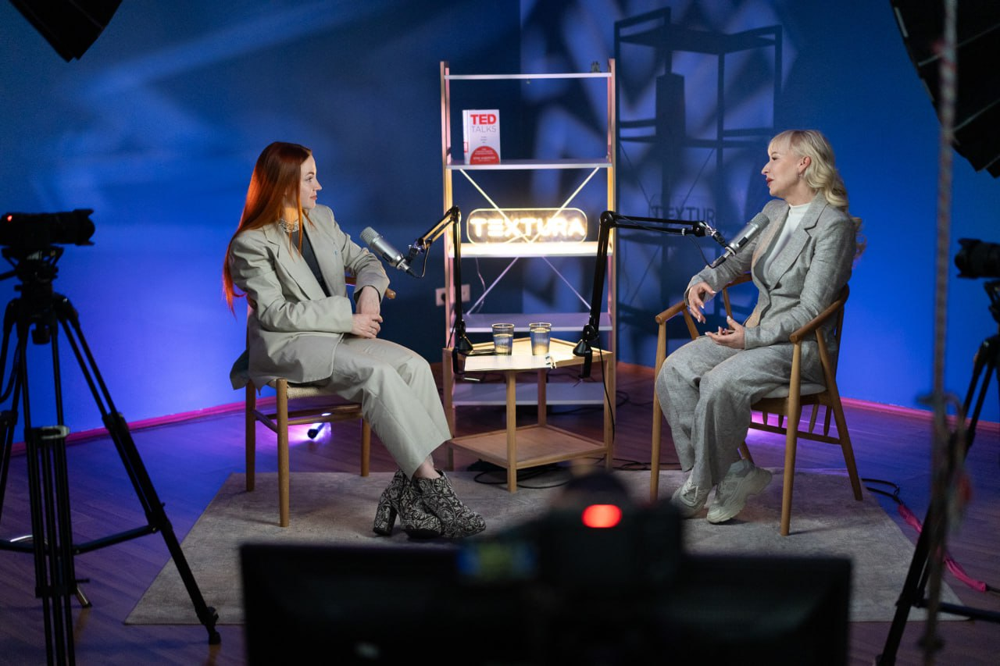
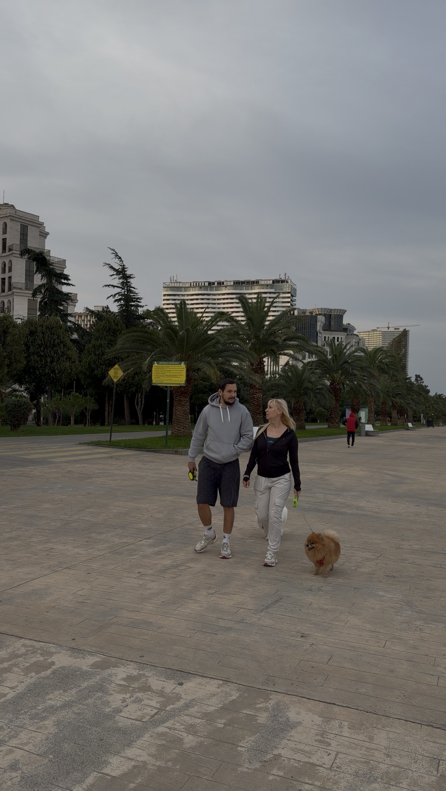
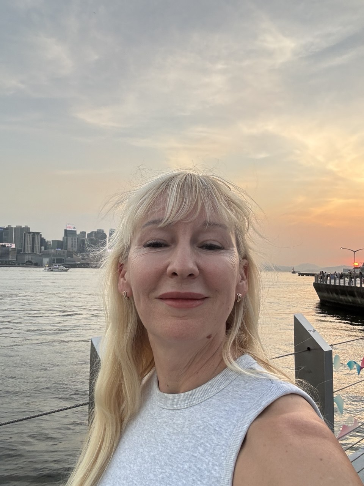

привет,
я Ульяна
три школы, жизнь в Батуми
и много историй по дороге
[ давайте знакомиться ]

сейчас мой
дом — Батуми
когда-то мы с мужем прилетели в Сочи из холодной Уфы
сидели у моря, пили кофе, а я думала: «почему мы вообще живём там, где мне всё время холодно?»
[ теперь море — часть моей обычной жизни ]

до трёх школ
было много всего
ночные клубы
летнее кафе
магазины
косметики
и продуктов
кадровое
агентство
так что историй у меня хватит. и удачных, и тех, после которых думаешь:
[ «ну, зато теперь знаю» ]

[ сегодня я совладелец
и управляющая трёх школ ]
российская
онлайн-школа
международная
онлайн-школа
офлайн-школа
в Батуми
300+
человек
в нашей команде
и да, меня спрашивают: «если у тебя есть директора, ты-то чем занимаешься?»
здесь рассказываю и об этом
я тоже боюсь,
когда начинаю новое
в этом году мы взяли для школы помещение в три раза больше прежнего

в день подписания я смотрела на пустые метры и считала: «а если учеников не станет больше? чем платить аренду?»
[ расчёты были.
стопроцентной
уверенности — нет ]

мне важно, с кем
можно всё это обсудить
в Уфе я основала бизнес-клуб.
после переезда мы с Василиной открыли клуб в Батуми
здесь можно сказать: «я не знаю, как это решить»
[ и обсудить с людьми, которые тоже платят зарплаты, ищут клиентов и отвечают за свой бизнес ]

[ а ещё я просто
люблю жить у моря ]
завтракать
на берегу
купаться, когда на календаре
уже конец октября
проводить
время с мужем
и иногда рассказывать историю, которая вообще никак не связана с работой

здесь будем
знакомиться ближе
я рассказываю, как мы развиваем школы, работаем с командой и пробуем новое
делюсь жизнью в Грузии, решениями и ошибками
а вы откуда и чем занимаетесь?